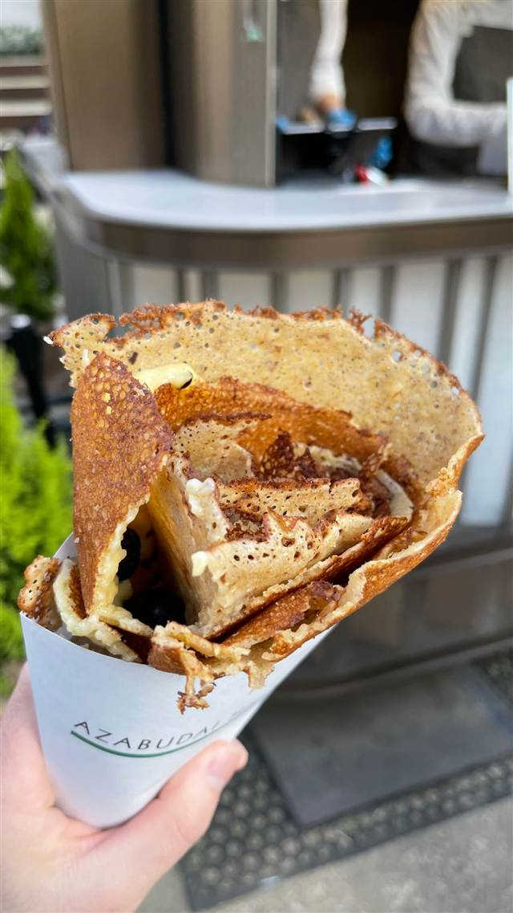
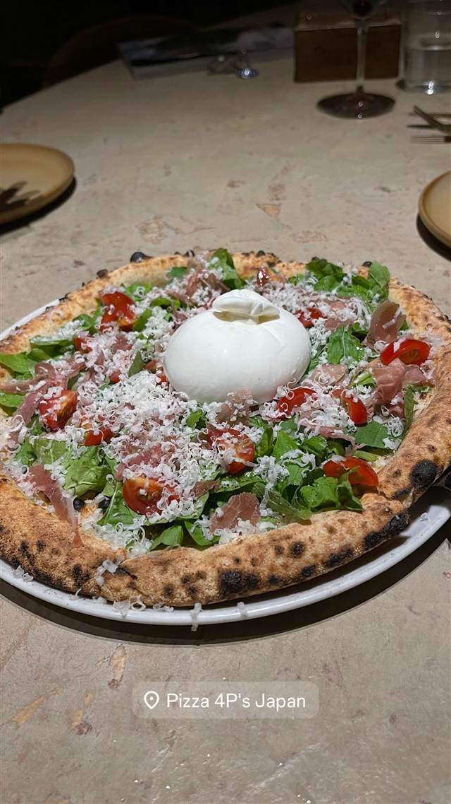
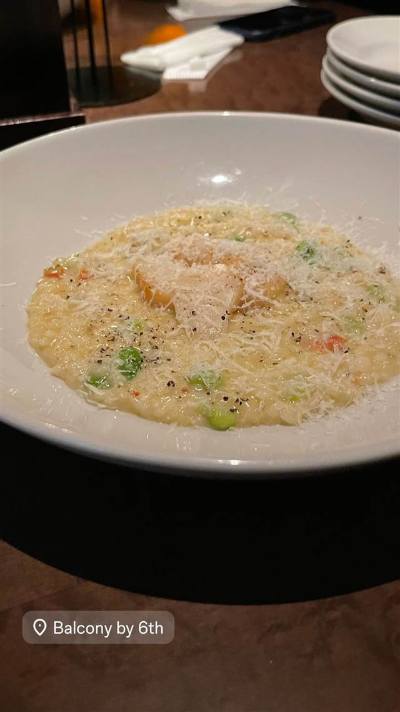
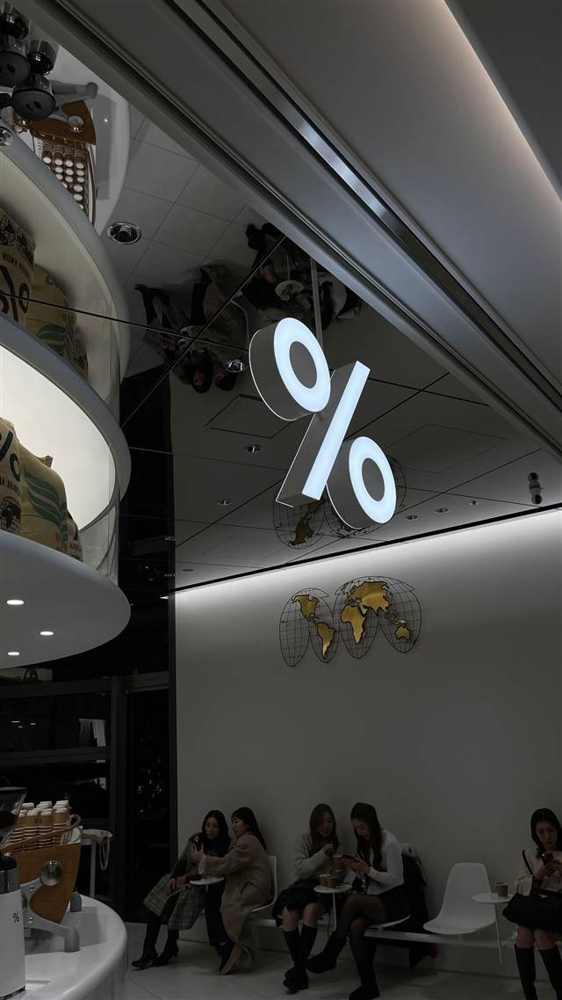
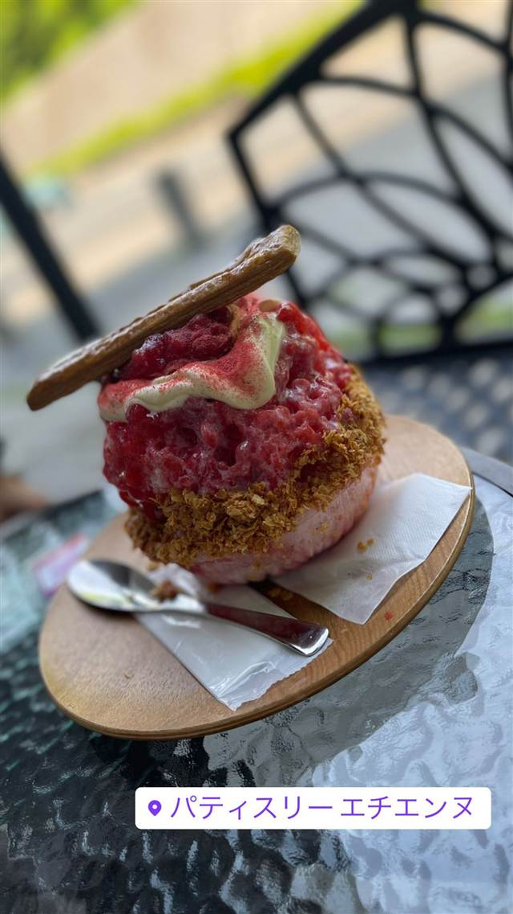
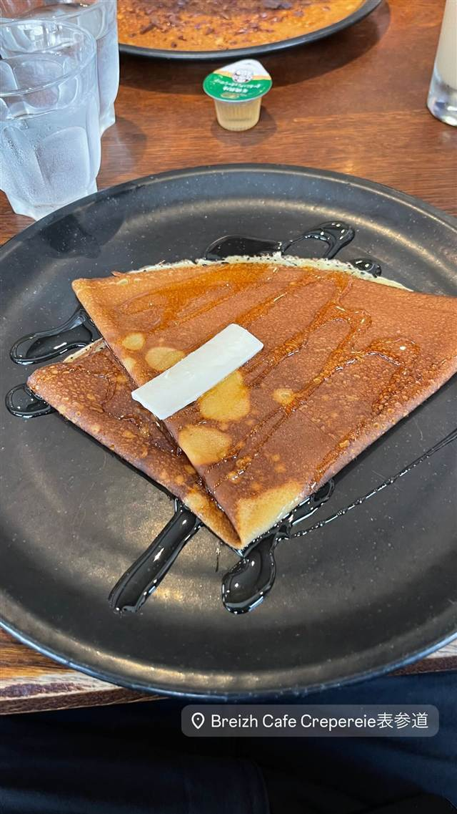
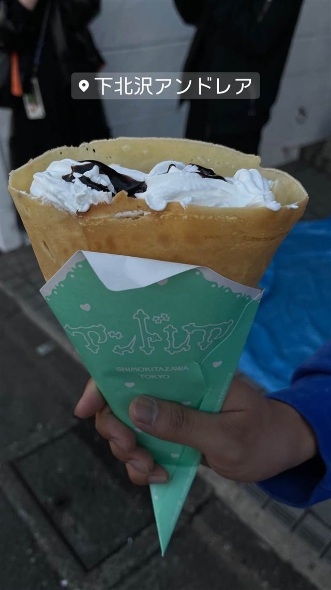

 スイーツ · クレープ · 麻布台 AZABUDAI REVIEWS 世間の評判 3.26食べログ クアトロフォルマッジとシュガーバター クアトロフォルマッジは4種のチーズとはちみつの甘さが好評という声があるシュガーバターは焼き色がよくパリパリとした食感が好評という評価がある 食べログ 口コミ35件 食べたもの：クレープ(麻布台) 店の情報 前のクレープアンドレア（下北沢） 次のクレープハーブス 二子玉川店（HARBS） NEARBY近い店・同じ系統の店  ピザ 神谷町 Pizza 4P's Tokyo ベトナム発、アジア30店舗超を経て麻布台に上陸した水牛モッツァレラのピザ 昼 ¥3,000～¥3,999 夜 ¥6,000～¥7,999  イタリアン 神谷町 Balcony by 6th マリリン・モンローも宿泊した老舗ホテルの系譜を継ぐテラス空間 昼 ¥3,000～¥5,999 夜 ¥6,800～¥9,999  カフェ 麻布台 % ARABICA 昼 ～¥999 夜 ～¥999  クレープ 新百合ヶ丘 パティスリー エチエンヌ（Etienne） 世界大会総合優勝の店主が作る繊細ないちごのケーキ 昼 ～¥999 夜 ～¥999  クレープ 表参道 BREIZH Cafe CREPERIE 表参道店 日本初のクレープリーから続く本場仕込みの蕎麦粉ガレット 夜 ¥2,000～¥2,999  クレープ 下北沢 アンドレア（下北沢） 納豆も選べる自由にトッピングできるボリューム満点クレープ 昼 ～¥999 夜 ～¥999